1060G pressure pump electric control
- Path
- Descriptions > 10 ENGINE > 1060 DIESEL FUEL INJECTION > 1060G pressure pump electric control
- Kind
- system description
- Applies to
- all engines; all production periods
- Interactive page
- https://sloeber94.github.io/elrnDB-fDbl/en/#/2582308
Applies to: all engines; all production periods
Injection control unit (MJD - 6JF Magneti Marelli common rail)
It is fitted in the engine compartment.
The control unit is the 'flash EPROM' type, i.e. reprogrammable from the outside without intervening on the hardware.
The injection control unit integrates the absolute pressure sensor.
PIN-OUT
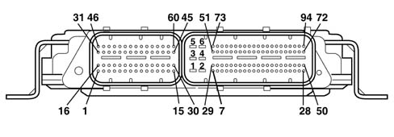
CONNECTOR A 1, Cylinder 4 injector positive 2, Not connected 3, Not connected 4, Fuel pressure regulator positive 5, Positive from main relay 6, Fuel pressure sensor negative 7, Not connected 8, Fuel pressure sensor positive 9, Insufficient engine oil pressure sensor signal 10, Flow meter air temperature signal 11, Not connected 12, Not connected 13, Not connected 14, Flow meter air flow signal 15, E.G.R. solenoid negative 16, Cylinder 1 injector negative 17, Cylinder 2 injector positive 18, Not connected 19, Not connected 20, Not connected 21, Timing sensor negative 22, Not connected 23, Intake air temperature and supercharging pressure sensor positive 24, Intake air temperature and supercharging pressure sensor negative 25, Timing sensor positive 26, Not connected 27, Flow meter negative 28, Not connected 29, Engine coolant temperature sensor earth 30, Not connected 31, Cylinder 3 injector negative 32, Not connected 33, Not connected 34, Fuel pressure regulator negative 35, Not connected 36, Not connected 37, Not connected 38, Fuel pressure sensor signal 39, Not connected 40, Flow meter positive 41, Turbo pressure signal 42, Not connected 43, Engine rpm positive 44, Not connected 45, Not connected 46, Cylinder 4 injector negative 47, Cylinder 1 injector negative 48, Cylinder 3 injector negative 49, Cylinder 2 injector negative 50, Not connected 51, Not connected 52, Not connected 53, Not connected 54, Engine coolant temperature sensor signal 55, Not connected 56, Timing sensor signal 57, Not connected 58, Not connected 59, Rpm sensor negative 60, Not connected CONNECTOR B 1, Control unit power earth 2, Control unit power earth 3, Control unit power earth 4, Control unit 12V supply 5, Control unit 12V supply 6, Control unit 12V supply 7, Fan 1 control (-) 8, Fan 2 control (-) 9, Not connected 10, Air conditioner compressor linear sensor negative 11, Not connected 12, Not connected 13, Fuel temperature sensor earth 14, Not connected 15, Track 1 positive on accelerator pedal potentiometer 16, Not connected 17, Not connected 18, Not connected 19, Not connected 20, Not connected 21, Not connected 22, Not connected 23, Ignition-controlled supply 24, Not connected 25, Not connected 26, Not connected 27, Not connected 28, Request to engage cliimate control from control button 29, Engine rpm signal for robotised gearbox 30, Not connected 31, Not connected 32, Track 2 negative on accelerator potentiometer 33, Not connected 34, Not connected 35, Track 1 negative on accelerator potentiometer 36, Not connected 37, Air conditioner compressor linear sensor positive 38, Not connected 39, Not connected 40, High speed CAN 1 line 41, Accelerator potentiometer track 2 signal 42, Not connected 43, Not connected 44, Not connected 45, Not connected 46, Not connected 47, Not connected 48, Not connected 49, Not connected 50, Direct supply from battery 51, Not connected 52, Not connected 53, Not connected 54, Not connected 55, Not connected 56, Not connected 57, Not connected 58, Not connected 59, Not connected 60, Not connected 61, Fuel temperature sensor signal 62, Not connected 63, Not connected 64, High speed H CAN 1 line 65, Accelerator potentiometer track 1 signal 66, W communication line 67, Not connected 68, Brake pedal switch signal (N.C.) 69, Not connected 70, Plug preheating unit test input 71, Not connected 72, Not connected 73, Not connected 74, Plug preheating relay control 75, Fuel pump relay control 76, Fuel heater relay control 77, Not connected 78, Injection system fault warning light (MIL) 79, Air conditioning compressor control 80, Main relay control 81, Not connected 82, Not connected 83, Accelerator potentiometer track 1 supply 84, Not connected 85, Not connected 86, Not connected 87, Air condioning linear sensor signal 88, Diagnostic line 89, Not connected 90, Water in diesel filter sensor signal 91, Not connected 92, Normally open brake pedal switch signal 93, Clutch pedal switch
Applies to: all engines; all production periods
CONSTRUCTION FEATURES
The main characteristics of the Unijet system are:
- – high injection pressure (up to 1350 bar);
- possibility of modulating the injection pressure under all engine working conditions between 150 and 1500 bar;
- introduction of fuel up to 100 mm3/cycle in a range between 100 and 6000 rpm;
- precise injection control, for both injection advance and duration of injection;
- pilot injection, before top dead centre, managed in relation to the engine rpm and load which allows the pressure derivative in the combustion chamber to be reduced, with a reduction in the noise level.
Applies to: all engines; all production periods
SPECIFCATIONS
This is fitted on the cylinder block/crankcase, 'facing' the phonic wheel on the engine flywheel.
It is of the inductive type, i.e. it functions by means of the variation in the magnetic field generated by the passage of the teeth of the flywheel (60-2 teeth).
The fuel injection control unit uses the rpm sensor to:
- determine the rotation speed;
- determine the angle of the crankshaft.
Applies to: all engines; all production periods
TECHNICAL ADVANTAGES
The advantages of the Unijet system are:
- it improves the formation of the air-fuel mixture;
- the injection pressure may be freely selected from within wide limits;
- the start of fuel injection and the amount of diesel injection can also be freely determined;
- it is more flexible when operating conditions vary, especially under cold condidtions;
- ecological and economical combustion;
- requires less engine power for its operation;
- simplified system;
- modular system;
- better performance at lower cost.
The results obtained with the Unijet system are:
- increased torque and power delivered by the engine;
- lower fuel consumption;
- reduction in pollutant emissions
- reduced total engine noise;
- improved car handling.
Applies to: all engines; all production periods
SPECIFCATIONS
The figure shows the rpm sensor components.
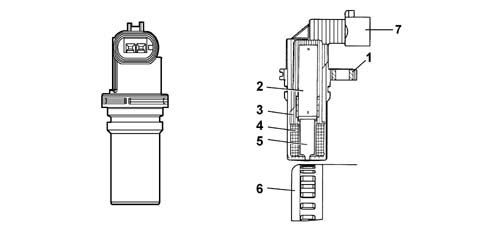
1 - Brass bush 2 - Permanent magnet 3 - Plastic sensor casing 4 - Coil winding 5 - Polar core 6 - Ring gear or flywheel 7 - Coaxial two-wire cable or electrical connection
Applies to: all engines; all production periods
OPERATION
The main functions of the system are basically as follows:
- control of fuel temperature
- control of coolant temperature
- control of quantity of fuel injection
- control of idle speed
- fuel cut off during deceleration;
- control of cylinder balance during idling
- control of irregular operation;
- control of exhaust fumes during acceleration
- control of exhaust gas recirculation (E.G.R.)
- control of maximum torque limiting
- control of maximum speed limiting
- control of heater plugs
- control of entry into operation of climate control system (where fitted)
- control of auxiliary fuel pump
- control of cylinder position
- control of main and pilot injection advance
- control of closed loop injection pressure
- control of electrical balance
- control of supercharging pressure
- self test
- connection with the Fiat CODE control unit (Immobilizer)
Applies to: all engines; all production periods
SPECIFCATIONS
PIN-OUT
Pin | Name | Signal type |
|---|---|---|
1 | Phonic wheel signal (A) | Frequency output |
2 | Phonic wheel signal (B) | Frequency output |
Applies to: all engines; all production periods
INJECTION SYSTEM
The Common Rail systems makes it possible to carry out a pre-injection before T.D.C. with the advantage of reducing the derivative of the pressure in the combustion chamber, reducing the value of the combustion noise, typical of direct injection engines.
The control unit controls the quantity of fuel injected, regulating the line pressure and injection times.
The control unit processes the following information to control the quantity of fuel to inject:
- rpm
- coolant temperature
- turbocharging pressure
- air temperature
- intake air quantity
- battery voltage
- diesel pressure
- accelerator pedal position.
Applies to: all engines; all production periods
TECHNICAL SPECIFICATIONS
Winding resistance 790 Ohm ± 20%
Winding resistance 680 mH ± 20% (f=1kHz)
The distance (gap) for obtaining correct signals, between the end of the sensor and the flywheel, should be between 0.8 and 1.5 mm.
This gap is not adjustable, so if a value outside the tolerance range is measured, check the condition of the sensor and the flywheel.
1 - Toothed wheel profile 2 - Rpm sensor signal 3 - Reference tooth 4 - TDC recognition point
Applies to: all engines; all production periods
DIAGRAM OF INPUT/OUTPUT INFORMATION TO/FROM THE CONTROL UNIT
.
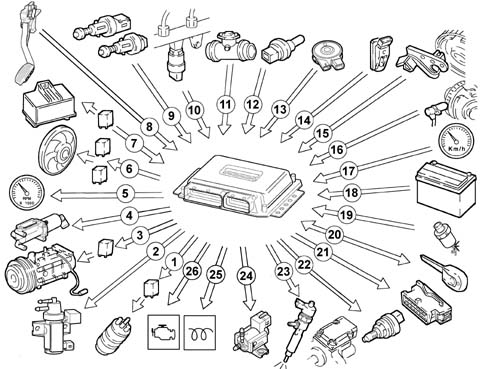
1, Auxiliary fuel pump 2, Turbocharger wastegate control solenoid 3, Climate control system compressor 4, Electric EGR valve 5, Rev counter 6, Engine radiator fan 7, Heater plugs control unit 8, Accelerator pedal potentiometer 9, Brake and clutch pedal switches 10, Fuel pressure sensor 11, Intake air quantity and temperature sensor (debimeter) 12, Engine coolant temperature sensor 13, Fuel temperature sensor integral with the diesel filter 14, Pressure relief sensor 15, Timing sensor 16, Rpm sensor 17, Vehicle speed sensor 18, Battery 19, Four-stage pressure switch 20, Fiat CODE control unit 21, Tester input 22, Fuel pressure regulator 23, Injectors 24, Throttle valve control solenoid 25, Heater plugs warning light 26, Injection system failure warning light
Applies to: all engines; all production periods
OPERATION
The passage from full to empty, due to the presence or absence of the tooth, causes a variation in the magnetic flow which is sufficient to generate an induced alternating voltage, resulting from the count of teeth located on a ring (or phonic wheel).
The frequency and range of the voltage sent to the electronic control unit provides it with the angular speed of the crankshaft.
Applies to: all engines; all production periods
SELF-DIAGNOSIS
The control unit's self-test system checks the signals coming from the sensors, comparing them with the permitted limits:
- indication of faults upon start-up:
- warning light on for 4 s indicates test stage
- warning light off after 4 secs indicates no faults in components that could affect the values established in emission control regulations
- warning light on after 4 secs indicates fault
- fault indication during operation
- warning light on indicates fault
- warning light off indicates no faults in components that could affect the values established in emission control regulations
- recovery
- the control unit defines as and when required the type of recovery depending on the faulty components
- the recovery parameters are managed by non-faulty components.
Applies to: all engines; all production periods
SPECIFCATIONS
Hall effect, fitted on the cylinder head and 'facing' the cams.
This pulley comprises a tooth which enables the timing sensor to indicate the engine's timing position.
The fuel injection control unit uses the timing sensor signal to recognise the TDC at the end of compression, and during starting so as to synchronise the engine management control unit with the engine.
The sensor is fitted near the exhaust camshaft.
Applies to: all engines; all production periods
RECOGNITION OF FIAT CODE
When the control unit receives the ignition 'ON' signal, it communicates with the body computer to obtain starting enablement.
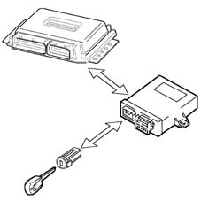
Applies to: all engines; all production periods
OPERATION
A semiconducting layer, through which current passes, immersed in a perpendicular magnetic field (force lines perpendicular to the current direction), generates at its ends a difference in potential known as Hall voltage.
If the intensity of the current remains constant, the voltage generated only depends on the intensity of the magnetic field; the intensity of the field simply has to vary periodically to produce a modulated electrical signal, whose frequency is proportional to the speed with which it changes magnetic field. To obtain this change, a tooth on the inside of the pulley moves close to the sensor.
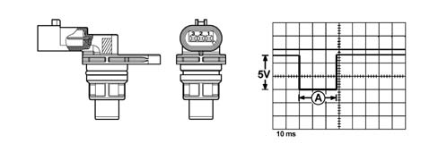
Applies to: all engines; all production periods
CONTROL OF THE FUEL TEMPERATURE
With the temperature of the fuel 110° C, measured by the sensor at the recirculation manifold, the control unit operates the pressure regulator in order to reduce the line pressure (it does not modify the injection times).
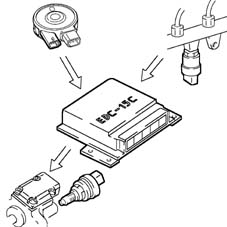
Applies to: all engines; all production periods
OPERATION
PIN-OUT
Pin | Name | Signal type |
|---|---|---|
1 | Earth | Earth |
2 | Timing signal | Frequency output |
3 | Fuel system | 12 V input |
In the specific case of the timing sensor, it is supplied by the engine management control unit at 5 V.
Whenever the rotor passes in front of the sensor, a Hall-effect change in output voltage from the sensor is generated; this change takes place throughout the duration of the passage of the rotor in front of the sensor, after which the signal returns to the initial value (5V).
Applies to: all engines; all production periods
CONTROL OF THE ENGINE COOLANT TEMPERATURE
With the temperature of the engine coolant greater than 105° C, the control unit:
- reduces the quantity of fuel injected (reduces the engine power)
- operates the cooling fans
- lights up the coolant overheating warning light.
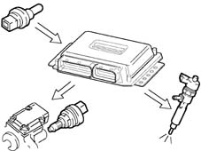
Applies to: all engines; all production periods
SPECIFCATIONS
The turbocharging pressure sensor is fitted on the inlet manifold and allows an inlet pressure of up to 1.5 bar to be measured (corresponding to 2.5 bar absolute).
The sensitive element consists of a piezoresistive element whose signal is amplified by an electronic circuit integrated in the sensor. The sensor is supplied directly by the electronic control unit with a voltage of 5 V, and as an output supplies a voltage directly proportional to the turbocharging pressure.
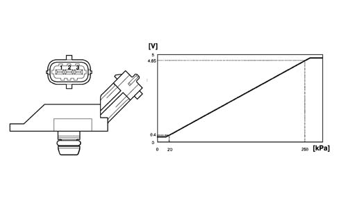
Applies to: all engines; all production periods
INTAKE VALVE CONTROL
The control unit supplies the valve control solenoid when the engine is turned off. This causes closure of the throttle valve on the intake duct and cuts of the flow of air to the cylinders.
This action limits annoying engine judder at key-off.
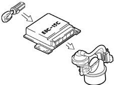
Applies to: all engines; all production periods
SPECIFCATIONS
Excess pressure sensor pin out
Pin | Name | Signal type |
|---|---|---|
1 | Fuel system | 5 V supply |
2 | Earth | Earth |
3 | Sensor output | Analogue output |
Applies to: all engines; all production periods
CONTROL OF THE QUANTITY OF FUEL INJECTED
On the basis of the signals coming from the sensors and the values in the map, the control unit:
- it operates the pressure regulator
- varies the 'pilot' injection time up to 3000 rpm
- varies the 'main' injection time.
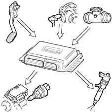
Applies to: all engines; all production periods
SPECIFCATIONS
It is fitted on the thermostatic cup and measures the temperature of the coolant by means of an NTC which has a negative resistance coefficient.
It has the following specifications:
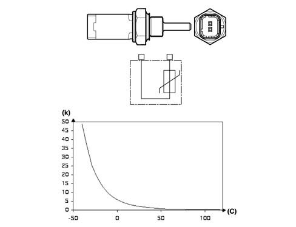
Applies to: all engines; all production periods
CONTROL OF THE IDLE SPEED
The control unit processes the signals coming from the various sensors and regulates the quantity of fuel injected:
- it operates the pressure regulator
- it varies the injector injection time.
Within certain limits the speed takes the battery voltage into account.
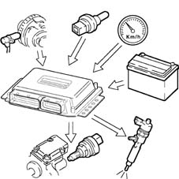
Applies to: all engines; all production periods
SPECIFCATIONS
Engine coolant temperature sensor specifications
Temperature (C°) | Resistance (kOhm) |
|---|---|
- 40 | 48.80 |
- 30 | 27.41 |
-20 | 15.97 |
- 10 | 9.62 |
0 | 5.97 |
10 | 3.81 |
20 | 2.5 |
30 | 1.68 |
40 | 1.15 |
50 | 0.81 |
60 | 0.58 |
70 | 0.42 |
80 | 0.31 |
90 | 0.23 |
100 | 0.18 |
110 | 0.14 |
120 | 0.11 |
130 | 0.08 |
Applies to: all engines; all production periods
FUEL CUT-OFF DURING OVERRUNNING
When the accelerator pedal is released the following logics are implemented:
- cuts off the supply to the fuel injectors
- partial reactivation of the supply to the injectors before the idle speed is reached;
- it operates the fuel pressure regulator.
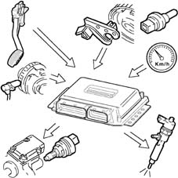
Applies to: all engines; all production periods
SPECIFCATIONS
The flow meter is located on the air inlet duct and is of the 'hot film' type.
An arrow on the flow meter outer casing indicates the direction of the air flow.
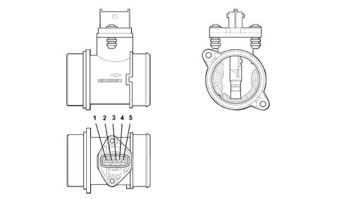
Applies to: all engines; all production periods
CONTROL OF THE CYLINDER BALANCE DURING IDLING
On the basis of the signals received from the sensors, the control unit controls the precision of the torque at idle speed:
- it varies the quantity of fuel injected in the individual injectors (injection time).
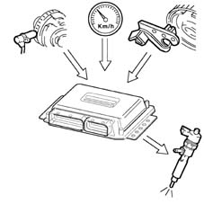
Applies to: all engines; all production periods
SPECIFCATIONS
Air flow meter pin out
Pin | Name | Signal type |
|---|---|---|
1 | Temperature sensor | Analogue output |
2 | Fuel system | 12 V supply |
3 | Earth | Earth |
4 | Reference voltage | 5 V |
5 | Sensor output | Analogue output |
Applies to: all engines; all production periods
CONTROL OF IRREGULAR OPERATION
The control unit processes the signals received from the various sensors and corrects the quantity of fuel to be injected in order to improve handlling, reducing jerks during driving via:
- the pressure regulator
- the opening time of the injectors.
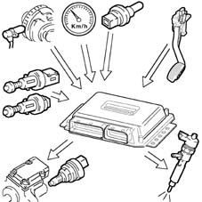
Applies to: all engines; all production periods
OPERATION
The operating principle is based on a diaphragm located in a measuring duct through which the intake air entering the engine flows.
The hot film diaphragm is kept at a constant temperature (about 120° C above the incoming air temperature) by the heating resistor.
The air mass passing through the measuring duct tends to draw heat from the diaphragm, so to keep the latter at a constant temperature, some current must flow through the resistor.
The figure shows the general diagram of the flow meter's sensitive element.
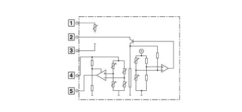
Applies to: all engines; all production periods
CONTROL OF EXHAUST FUMES DURING ACCELERATION
In order to limit smoke during fast transitions, the control unit, on the basis of the signals received from the flow meter and engine rpm, limits the quantity of fuel to be injected via:
- the pressure regulator
- the injection time of the fuel injectors.
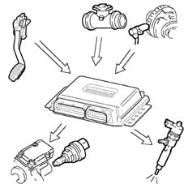
Applies to: all engines; all production periods
OPERATION
The platinum hot-film sensor is a PTC (positive temperature coefficient) thermal resistor, i.e. a resistor whose value increases as the temperature increases.
As the quantity of air taken in increases, the amount of heat drawn from the sensor increases, so there is a reduction in the sensor's resistance. As this is inserted in a 'bridge' measurement circuit, it causes an increase in the output voltage, measured by the ECU to calculate the volume of air drawn in by the engine.
The flow meter is also able to distinguish the direction of the air flow, so the information relates to the actual quantity of air drawn in by the engine, unaffected by any turbulence.
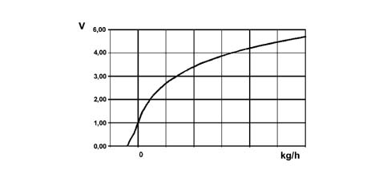
Applies to: all engines; all production periods
CONTROL OF EXHAUST GAS RECIRCULATION (E.G.R.)
On the basis of the engine load and signal coming from the accelerator pedal potentiometer, the control unit restricts the amount of air drawn in, implementing the partial intake of exhaust gases.
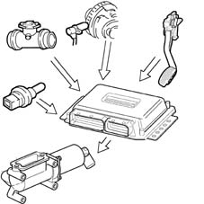
Applies to: all engines; all production periods
OPERATION
Air flow meter specifications
Temperature (C°) | Resistance (kOhm) |
|---|---|
- 40 | 39.26 |
- 30 | 22.96 |
-20 | 13.85 |
- 10 | 8.609 |
0 | 5.499 |
10 | 3.604 |
20 | 2.42 |
30 | 1.662 |
40 | 1.166 |
50 | 0.835 |
60 | 0.609 |
70 | 0.452 |
80 | 0.34 |
90 | 0.261 |
100 | 0.202 |
110 | 0.159 |
120 | 0.127 |
130 | 0.102 |
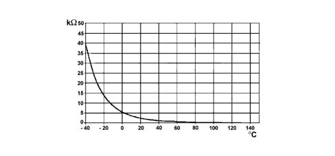
Applies to: all engines; production: da 12/03
EOBD (EUROPEAN ON BOARD DIAGNOSIS) SYSTEM
The implementation of the EOBD function is managed by the engine management control unit which manages the yellow warning light for the engine management system (EOBD) as described below.
The warning light: is activated on request by the engine control unit for about 4 seconds (check) when the ignition key is turned to 'MAR'.
The EOBD system carries out continuous diagnosis of the components related to the vehicle emissions system, signalling any deterioration of these components by the warning light in the panel coming on.
The aim of the system is:
- keeping the efficiency of the system under control;
- signalling an increase in emissions due to a vehicle malfunction;
- signalling the need to replace deteriorated components.
Applies to: all engines; all production periods
OPERATION
Applies to: all engines; all production periods
CONTROL OF MAXIMUM TORQUE LIMITATION
According to the number of revs, the control unit calculates the following from predefined maps:
- the torque limit
- the permissible fumes (limit).
It compares these minimum values and corrects them with other parameters:
- coolant temperature
- engine rpm
- vehicle speed
it controls the quantity of fuel to be injected (pressure regulator - injectors).
Applies to: all engines; all production periods
Electronic control unit
It is built into the fuel heater and measures the temperature of the coolant by means of an NTC thermistor which has a negative resistance coefficient.
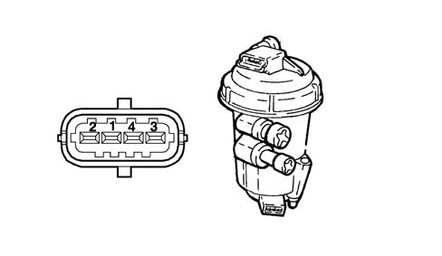
Applies to: all engines; all production periods
CONTROL OF MAXIMUM SPEED LIMIT
According to the number of revs, the control unit implements two intervention strategies:
- at 5000 rpm it cuts off the fuel, reducing the line pressure
- above 5400 rpm it deactivates the auxiliary pump and the injectors.
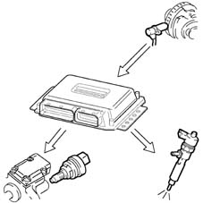
Applies to: all engines; all production periods
Electronic control unit
Fuel temperature sensor pin out
Pin | Name | Signal type |
|---|---|---|
1 | Sensor earth | Earth |
2 | Temperature signal | Analogue output |
Fuel temperature sensor specifications
Temperature (C°) | Resistance (kOhm) |
|---|---|
- 40 | 48.80 |
- 30 | 27.41 |
-20 | 15.97 |
- 10 | 9.62 |
0 | 5.97 |
10 | 3.81 |
20 | 2.5 |
30 | 1.68 |
40 | 1.15 |
50 | 0.81 |
60 | 0.58 |
70 | 0.42 |
80 | 0.31 |
90 | 0.23 |
100 | 0.18 |
110 | 0.14 |
120 | 0.11 |
130 | 0.08 |
The sensor is based on semiconductor technology; so if the sensor temperature increases as the fuel temperature increases, the resistance decreases.
As the variation in resistance is not linear, for the same temperature increment, it is higher for low temperatures than for high temperatures.
Applies to: all engines; all production periods
CONTROL OF HEATER PLUGS
The control unit, during the following stages:
- starting
- post-starting;
the engine management control unit times the operation of the heater plugs control unit according to the engine temperature.
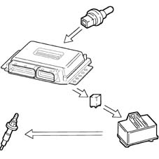
Applies to: all engines; all production periods
SPECIFCATIONS
It is fitted at the end of the 'rail' fuel distribution manifold and has the task of supplying the injection control unit with a 'feedback' signal to:
- regulate the injection pressure
- regulating injection duration.
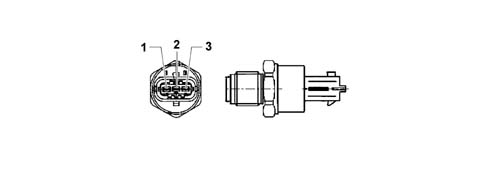
Applies to: all engines; all production periods
CONTROL OF AIR CONDITIONING SYSTEM ACTIVATION
The control unit operates the air conditioning compressor:
- switching it on/off when the relevant switch is pressed
- switching it off momentarily (for around 6 s) if there is substantial acceleration or a request for maximum power.
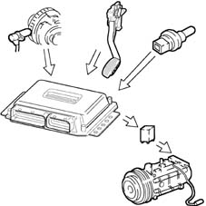
Applies to: all engines; all production periods
SPECIFCATIONS
The sensor is supplied directly by the engine management control unit with a voltage of 5 V. The output voltage varies linearly between 0.5 V (0 bar) and 4.5 V (1500 bar).
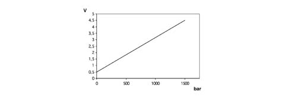
Applies to: all engines; all production periods
CONTROL OF AUXILIARY ELECTRIC FUEL PUMP
Irrespective of the engine speed, the control unit:
- supplies the auxiliary fuel pump with the ignition key in the ON position
- excludes the auxiliary pump supply if the engine is not started up within a few seconds.
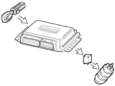
Applies to: all engines; all production periods
SPECIFCATIONS
Fuel pressure sensor pin out
Pin | Name | Signal type |
|---|---|---|
1 | Earth | Earth |
2 | Sensor output | Analogue output |
3 | Fuel system | 5 V supply |
Applies to: all engines; all production periods
CONTROL OF CYLINDER POSITION
During each revolution of the engine, the control unit recognizes which cylinder is in the explosion stroke and operates the injection sequence at the appropriate cylinder.
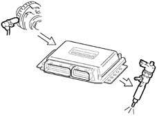
Applies to: all engines; all production periods
CONSTRUCTION FEATURES
The sensor consists of a casing, secured to the accelerator pedal mount, which contains a shaft, in an axial position, connected to two potentiometers: one main one and one safety one.
There is a coil spring on the shaft which guarantees the correct resistance to the pressure whilst a second spring ensures the return on release.
The redundant reading of the signal makes it possible to continuously monitor the plausibility of the values measured, so as to ensure completely safe driving, even in the event of a fault.
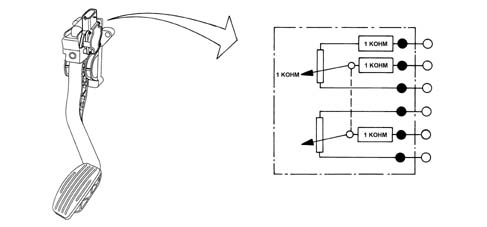
Applies to: all engines; all production periods
CONTROL OF MAIN AND OPERATED INJECTION ADVANCE
On the basis of the signals coming from the various sensors, including the absolute pressure sensor in the actual control unit, the control unit determines the optimum injection point according to an internal map, not only in relation to driving comfort, but also in accordance with EURO 3 emission limits.
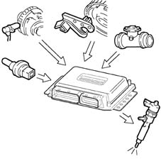
Applies to: all engines; all production periods
OPERATION
The position of the accelerator pedal is transformed into an electrical voltage signal and is sent to the fuel injection control unit by the potentiometer connected to the accelerator pedal.
The accelerator pedal position signal is processed together with the information relating to the rpm, to obtain the fuel injection times and relevant pressure.
Pin | Name | Signal type |
|---|---|---|
1 | Track 2 supply | 5 V input |
2 | Track 1 supply | 5 V input |
3 | Track 1 earth | Earth |
4 | Track 1 signal | Analogue output |
5 | Track 2 earth | Earth |
6 | Track 2 signal | Analogue output |
Applies to: all engines; all production periods
CONTROL OF CLOSED LOOP INJECTION PRESSURE
On the basis of the engine load, determined by processing the signals coming from the various sensors, the control unit operates the regulator to obtain optimum line pressure.
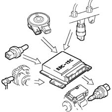
Applies to: all engines; all production periods
BOSCH SENSOR TECHNICAL SPECIFICATIONS
Supply voltage: 5V ± 0.3V
Resistance at potentiometer slide terminals: 1 kOhm ± 0.4 kOhm
Track 1 resistance: 1.2 kOhm ± 0.4 kOhm
Track 2 resistance: 1.7 kOhm ± 0.8 kOhm
Applies to: all engines; all production periods
CONTROL OF ELECTRICAL BALANCE
According to the battery voltage, the control unit varies the idle speed:
- it increases the injector injection time
- it regulates the line pressure.
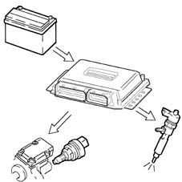
Applies to: all engines; all production periods
HELLA SENSOR TECHNICAL SPECIFICATIONS
Supply voltage: 5V ± 0.3V
Resistance at potentiometer slide terminals: 1 kOhm ± 0.4 kOhm
Track 1 resistance: 0.9 kOhm ± 35% ....1.4 kOhm ± 35%
Track 2 resistance: 1.2 kOhm ± 35% ....2.0 kOhm ± 35%
Applies to: all engines; all production periods
CONTROL OF TURBOCHARGING PRESSURE
At the various engine operating speeds, the control unit processes the signal coming from the turbocharging sensor and determines the quantity of fuel to be injected:
- it operates the pressure regulator
- varies the injection time.
- it controls the turbo control solenoid (wastegate) in order to optimise performance under all operating conditions.
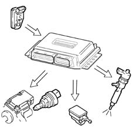
Applies to: all engines; all production periods
CONSTRUCTION FEATURES
The fuel pressure regulator is fitted on the common rail and regulates the fuel pressure in accordance with commands from the engine management control unit, via a ball valve which discharges the fuel on the low-pressure line to the fuel tank.
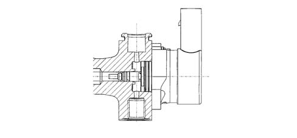
Applies to: all engines; all production periods
RADIATOR FAN CONTROL
Component faulty | Action of the control unit |
|---|---|
Engine rpm sensor | Break in the fuel supply |
Engine timing sensor | Engine starting not possible |
Fuel pressure sensor | Oeration in open-loop limiting fuel pressure - a pressure value of 0 bar is assumed |
Supercharging pressure sensor | Interruption of turbocharging driver. A pressure of 0.9 bar is assumed |
Flow meter | Disabling of E.G.R. driver |
Temperature sensor | Temperature sensor: With the engine running a fluid value of 79.96° C is assumed (cooling fan activated) = in other conditions the value is 0° C |
Fuel temperature sensor | A value of 79.96 ° C is assumed |
Air temperature sensor | A value of 40.00 ° C is assumed |
Atmospheric pressure sensor | A value derived from the supercharging pressure is used. With simultaneous malfunction on the turbocharging sensor, a value of 0.9 bar is assumed. |
Pedal potentiometer | An accelerator opening of 0% is assumed. The air conditioning compressor coupling is disabled and switched off |
Pedal potentiometer | A 0% opening value is assumed for accelerator n 2 (redundant) The air conditioning compressor coupling is disabled and switched off |
Preheating relay | 10 seconds after initialization the heater plugs warning light starts flashing for 30 secs. |
Applies to: all engines; all production periods
CONSTRUCTION FEATURES
The fuel pressure regulator contains a solenoid which is controlled by the engine management control unit by the PWM method (carrier 1 kHz). When the duty cycle is set to 0%, the solenoid is not supplied: there is minimum pressure in the rail because of the preload of the ball valve spring.
Applies to: all engines; all production periods
RECOVERY
.
Applies to: all engines; all production periods
ELECTRICAL SPECIFICATIONS
Resistance: 2.07 - 2.53 (ohm) at 20 ° C
Maximum current 2.5 A
Minimum pressure not supplied 50 bar
Applies to: all engines; all production periods
INJECTION CONTROL UNIT
Common Rail EDC-15C
Applies to: all engines; all production periods
CONSTRUCTION FEATURES
The electric fuel pump supplies the high-pressure pump. It is fully immersed in the fuel in the fuel tank. The pump assembly is designed so as to obtain the maximum fuel level in the suction area.
This function is achieved by a Venturi located on the return pipe to the suction area, rather than to the fuel tank. The pumping unit is of the roller type and permits a capacity of 160 litres/hour.
The pump comprises a permanent-magnet electric motor which is continuously supplied when the engine is on. The fuel sent to the high-pressure pump which has not been used flows back into the tank through a pressure-relief valve mounted on the filter unit.
The pump has a further pressure-relief valve, so as to avoid damage to the pumping unit if the delivery pipe becomes blocked.
Applies to: all engines; all production periods
CONSTRUCTION FEATURES
It is fitted in the compartment under the windscreen, engine side. The control unit is the 'flash EPROM' type, i.e. reprogrammable from the outside without intervening on the hardware.
The injection control unit integrates the absolute pressure sensor.
Applies to: all engines; all production periods
TECHNICAL SPECIFICATIONS
Absorbed current < = 4.6 A (supply voltage 13 V)
Capacity > = 150 l/h
Working pressure 200 - 400 kPa
Applies to: all engines; all production periods
PIN-OUT
.
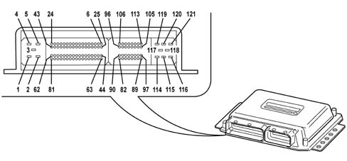
1, Earth 2, Earth 3 Earth 4, Actuator supply 5, Injector/ECU supply 6, CAN A 7, CAN B 8, +30 power supply 9, N.C. 10, N.C. 11, N.C. 12, N.C. 13, Injection relay pin 85 14, N.C. 15, Borg-Warner valve actuator 16, EGR actuator 17, Wastegate actuator 18, Air conditioner relay pin 85 19, Radiator fan high speed relay pin 85 20, Radiator fan low speed relay pin 85 21, Supplementary heater relay pin 85 22, Spark plug activation 23, Diesel temperature 24, Fuel pump relay pin 85 25, N.C. 26, N.C. 27, N.C. 28, N.C. 29, N.C. 30, N.C. 31, N.C. 32, N.C. 33, N.C. 34, N.C. 35, N.C. 36, N.C. 37, N.C. 38, N.C. 39, N.C. 40, N.C. 41, N.C. 42, N.C. 43, N.C. 44, N.C. 45, N.C. 46, N.C. 47, N.C. 48, K line 49, N.C. 50, N.C. 51, Quadrinary ON (activate signal from four-stage pressure switch) 52, Trinary ON (activation signal from 3-stage pressure switch) 53, N.C. 54, N.C. 55, N.C. 56, N.C. 57, N.C. 58, Key sense (key ON signal) 59, N.C. 60, Request to switch on air conditioner 61, Clutch switch 62, Spark plug fault diagnosis 63, N.C. 64, N.C. 65, N.C. 66, N.C. 67, N.C. 68, N.C. 69, N.C. 70, N.C. 71, N.C. 72, N.C. 73, N.C. 74, N.C. 75, N.C. 76, Accelerator 1 pedal earth 77, Accelerator 1 pedal 78, Accelerator 1 pedal power supply 79, Accelerator 2 pedal earth 80, Accelerator 2 pedal 81, Accelerator 2 pedal power supply 82, Diesel temperature sensor pin 1 83, Diesel temperature sensor pin 2 84, Coolant temperature sensor pin 1 85, Coolant temperature sensor pin 2 86, Air flow meter (debimeter) pin 1 87, N.C. 88, Air flow meter (debimeter) pin 3 89, Air flow meter (debimeter) pin 5 90, Diesel pressure sensor pin 3 91, Diesel pressure sensor pin 2 92, Diesel pressure sensor pin 1 93, Turbo pressure sensor pin 1 94, Turbo pressure sensor pin 3 95, Turbo pressure sensor pin 2 96, N.C. 97, Air flow meter (debimeter) pin 4 98, Engine oil pressure switch 99, RPM sensor pin 1 100, RPM sensor pin 2 101, RPM sensor pin 3 102, Timing sensor pin 1 103, Timing sensor pin 2 104, Timing sensor pin 3 105, N.C. 106, N.C. 107, N.C. 108, Diesel pressure regulator 109, Diesel pressure regulator 110, N.C. 111, N.C. 112, N.C. 113, N.C. 114, Cylinder 4 injector control 115, N.C. 116, N.C. 117, Cylinders 1-2 injector power supply 118, Cylinder 3-4 injector common 119, Cylinder 1 injector control 120, Cylinder 2 injector control 121, Cylinder 3 injector control
Applies to: all engines; all production periods
CONSTRUCTION FEATURES
The device is interfaced and checked by the engine management system in accordance with the EOBD protocol. It has been designed to carry out all the functions for controlling and monitoring the state of operation of the individual plugs during the diesel engine preheating stage.
The control unit comprises a protection against high currents and high voltrages, and has a control logic which, in the event of a fault, acts as an auto-reset electronic fuse.
Because of its thermal characteristics and resistance to external agents, the device can be fitted directly in the engine compartment.
The control unit is protected on all terminals against the possible reversed connection of battery terminals, and is built in such a way as to withstand all stresses occurring in the vehicle.
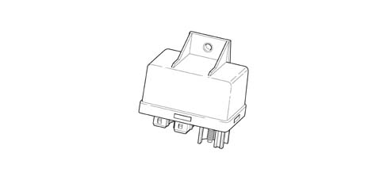
Applies to: all engines; all production periods
CONSTRUCTION FEATURES
The function of this sensor is to detect the engine's speed of rotation and angular position.
It is a transducer with variable magnetic reluctance (pick-up) mounted on the cylinder block, and it faces the SMOT 60-2 teeth phonic wheel attached to the flywheel.
Electrical characteristics
Winding resistance R = 860 O ± 10% a 20 ° C.
Applies to: all engines; all production periods
CONSTRUCTION FEATURES
The unit has the following connecting terminals:
Terminal | Name |
|---|---|
30 | Direction connection to battery positive ((+Vbat) for supplying the plugs |
G1, G2, G3, G4 | Output for plug connections |
86 | Supply from engine management control unit |
31 | Earth connection (GND) |
ST | Input for start to control coming from engine management control unit |
K | Input for start to control coming from engine management control unit |
DI | Output for diagnosis to engine management control unit |
Applies to: all engines; all production periods
COMPOSITION
.
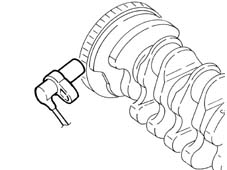
Applies to: all engines; all production periods
CONSTRUCTION FEATURES
The rail consists of a forged steel tube designed to withstand the high operating pressures in the high-pressure system.
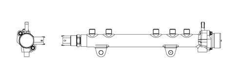
Applies to: all engines; all production periods
COMPOSITION
.
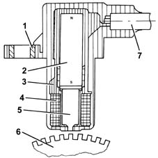
1, Brass bush 2, Permanent magnet 3, Plastic sensor casing 4, Coil winding 5, Polar core 6, Toothed or phonic wheel 7, Coaxial two-wire cable or electrical connection
Applies to: all engines; all production periods
CONSTRUCTION FEATURES
The internal volume in the rail is 20 cm3: this volume has been determined so as to minimise pressure peaks due to the injection process, without slowing down the commands to change the fuel pressure set by the engine management control unit, in order to optimise combustion.
The fuel from the high-pressure pump reaches the rail and is then taken to the injectors. A pressure sensor and the high-pressure regulator are mounted on the rail.
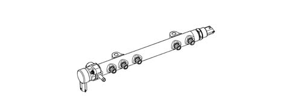
Applies to: all engines; all production periods
OPERATION
As the phonic wheel teeth go past, the magnetic flow created by the magnet (2) undergoes fluctuations due to the change in gap. These fluctuations induce an electromotive force in the winding (2), at the ends of which there is a voltage which alternates between positive (tooth opposite sensor) and negative (gap opposite sensor). The peak value of the output voltage from the sensor, provided other factors remain the same, depends on the distance between the sensor and tooth (gap). The phonic wheel comprises sixty teeth, two of which have been removed to create a reference: the pitch of the wheel thus corresponds to an angle of 6° (360° divided by 60 teeth). The synchronization point is recognized at the end of the first tooth after the space created by the two missing teeth: when this passes under the sensor, the pair of pistons 1-4 of the engine are at 114 before TDC. The distance (gap) for obtaining correct signals, between the end of the sensor and the flywheel, should be between 0.8 and 1.5 mm. This gap is not adjustable, so if a value outside the tolerance range is measured, check the condition of the sensor and the flywheel.
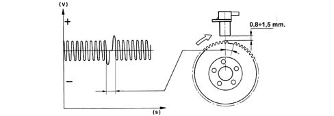
Applies to: all engines; all production periods
CONSTRUCTION FEATURES
The high-pressure pump is of the CP1 Compact type with three radial pistons. The capacity is 567 mm3/revolution and the rotation speed, being mounted on the camshaft, is equal to half the speed of rotation of the crankshaft (reduction ratio 2:1). The pump is lubricated and cooled by the flow of fuel passing through it: the necessary flow rate is provided by the low-pressure pump. This supplies the pump with a quantity of fuel which always exceeds the engine's requirement, so as to create a recirculation of fuel towards the tank, and so the pump is lubricated (as a priority) and cooled.
The movement of the pistons is deterined by a cam joined to the pump shaft: this drives a polygonal ring which acts on the piston small end.
Each pumping unit has an inlet plate valve and a delivery supply valve.
The pump comprises a shutoff valve: this protects the pump in the event of a low flow rate from the low-pressure supply, thus ensuring lubrication to the pumping units and cam mechanism.
Applies to: all engines; all production periods
CONSTRUCTION FEATURES
The function of the sensor is to measure the engine's timing during synchronization.
It is a Hall-effect sensor, mounted on the cylinder head and facing the welded ring (on which the window is located) on the pulley fitted on the camshaft.
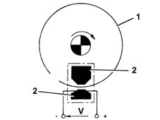
1, Pulley ring 2, Magnetic material
Applies to: all engines; all production periods
TECHNICAL SPECIFICATIONS
Radial pump with 3 pumping units
Capacity 567 [mm3/revolution]
Efficiency: > 79% at 1350 bar at 1000 rpm
Nominal pressure: 1350 bar
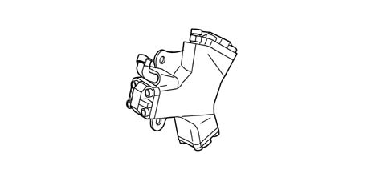
Applies to: all engines; all production periods
OPERATING
A semiconducting layer, through which current passes, immersed in a perpendicular magnetic field (force lines perpendicular to the current direction), generates at its ends a difference in potential known as Hall voltage.
If the intensity of the current remains constant, the voltage generated only depends on the intensity of the magnetic field; the intensity of the field simply has to vary periodically to produce a modulated electrical signal, whose frequency is proportional to the speed with which it changes magnetic field.
To obtain this change, a metal ring (the inside of the pulley) with a gap passes through the sensor.
As it moves, the metal part of the ring covers the sensor, blocking the magnetic field, resulting in a low output signal; viceversa, level with the gap and so when the magnetic field is present, the sensor generate a high signal.
Consequently the high signal alternates with the low signal every two engine revolutions, to be precise when cylinder no. 1 is 58° before TDC.
This signal, together with the rpm and TDC signal, allows the control unit to recognize the cylinders and determine the injection point.
Applies to: all engines; all production periods
CONSTRUCTION FEATURES
The diesel heater is built into the diesel filter cover and comprises three resistors which are supplied by the control unit in accordance with the signal from the fuel temperature sensor.
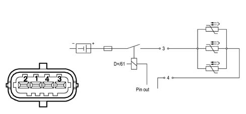
Applies to: all engines; all production periods
CONSTRUCTION FEATURES
The sensor consists of a casing, secured to the accelerator pedal mount, which contains a shaft, in an axial position, connected to two potentiometers: one main one and one safety one.
There is a coil spring on the shaft which guarantees the correct resistance to the pressure whilst a second spring ensures the return on release.
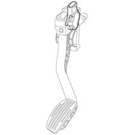
Applies to: all engines; all production periods
CONSTRUCTION FEATURES
DIESEL FILTER CONNECTOR PIN-OUT
Pin | Name | Signal type |
|---|---|---|
3 | Fuel system | 12V |
4 | Earth | Earth |
Applies to: all engines; all production periods
CONSTRUCTION FEATURES
.
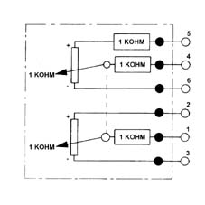
Applies to: all engines; all production periods
CONSTRUCTION FEATURES
Inserted in the diesel filter container casing, at the bottom, it indicates the presence of water via the warning light on the instrument panel.
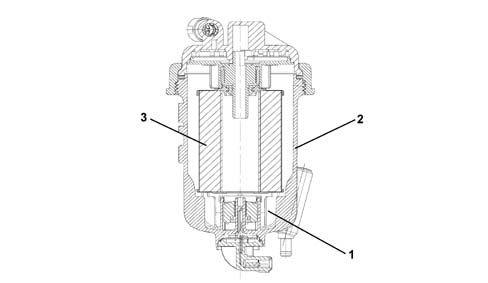
1 - Water presence sensor 2 - Diesel filter casing 3 - Filter element
Applies to: all engines; all production periods
OPERATION
The position of the accelerator pedal is transformed into an electrical voltage signal and is sent to the fuel injection control unit by the potentiometer connected to the accelerator pedal.
The accelerator pedal position signal is processed together with the information relating to the rpm, to obtain the fuel injection times and relevant pressure.
Applies to: all engines; all production periods
CONSTRUCTION FEATURES
The air flow meter measures maximum air flow taken in from the surroundings; this flow rate is used to control the EGR and to limit exhaust emissions during transient stages.
It is a hot-film meter, mounted on the inlet duct downstream of the air cleaner and upstream of the compressor.
Diameter of passage section: 50 mm.
Electrical characteristics
- Supply: 5V nominal
- Range: 0-480 kg/h
The air temperature sensor is built in.
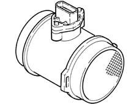
Applies to: all engines; all production periods
COMPOSITION
.
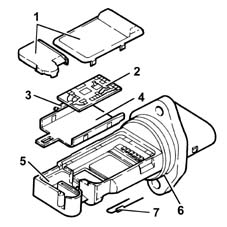
1, Covers 2, Electronic card 3, Sensor 4, Support plate 5, Support 6, O-ring 7, Temperature sensor
Applies to: all engines; all production periods
OPERATION
The operating principle is based on a heated diaphragm located in a measuring duct through which the intake air entering the engine flows.
The hot film diaphragm is kept at a constant temperature (about 120° C above the incoming air temperature) by the heating resistor.
The air mass passing through the measuring duct tends to draw heat from the diaphragm, so to keep the latter at a constant temperature, some current must flow through the resistor.
This current is measured by a suitable Wheatstone bridge.
The current is therefore proportional to the mass of flowing air.
The flow meter directly measures the air mass (not volume), thus eliminating problems of temperature, altitude, pressure, etc.
Applies to: all engines; all production periods
CONSTRUCTION FEATURES
This measures fuel pressure in the rail to determine injection pressure; the injection pressure value is used as feedback for closed-loop control of the pressure and to determine the duration of the electrical command (ET) for injection.
Electrical characteristics
- Supply: +5V
- Range: 0 -1500 bar
Linear characteristic:
- 500 mV at 0 bar
- 450 mV at 1500 bar
Applies to: all engines; all production periods
OPERATING
It is fitted in the centre of the 'rail' fuel distribution manifold and has the task of supplying the injection control unit with a 'feedback' signal for:
- regulate the injection pressure
- regulate injection duration.
Applies to: all engines; all production periods
CONSTRUCTION FEATURES
It measures the atmospheric pressure in order to correct the measured air flow rate and the reference air flow rate for control of the EGR.
Integrated in the fuel injection control unit (ECU).
Applies to: all engines; all production periods
CONSTRUCTION FEATURES
This measures the coolant temperature in order to give the control unit an indication of the engine's temperature status.
It is an NTC sensor, whose active part is a resistor with negative coefficient, produced through sintering; the nominal resistance is 2.5 kO ± 6% at 20 ° C, 0,186 kO ± 2% at 100 ° C.
It is mounted on the thermostat.
Electrical characteristics
- Supply: +5V ± 0.15
- Range: -40° -÷ 140 ° C
Although the sensor specifications are not linear, they are considered as such; the temperature read by the control unit differs in relation to the actual figure.
Applies to: all engines; all production periods
CONSTRUCTION FEATURES
.
Applies to: all engines; all production periods
COMPOSITION
.
1, NTC resistor 2, Sensor body 3, Supply connector
Applies to: all engines; all production periods
OPERATION
The sensor consists of a brass casing which protects the actual resistive element, which consists of an NTC thermistor (Negative Temperature Coefficient, whose electrical resistance decreases as the temperature increases).
The reference voltage is 5 Volt. as the input circuit into the control unit is designed as a voltage divider, this voltage is divided between a resistor located in the control unit and the sensor's NTC resistor. The control unit is thus able to assess the changes in the sensor's resistance via the changes in voltage, and thus obtain the temperature information.
Applies to: all engines; all production periods
DESCRIPTION
The one-piece fuel heater-temperature sensor system is fitted between the aluminium mount and diesel filter cartridge. It performs the following functions:
- Measures filter input temperature by means of an NTC (Negative Temperature Coefficient) and sends the reading to the control unit that uses it to determine whether to:
- enable heater activation (low temperatures);
- adjust engine fuel supply under conditions of high diesel temperature.
- Heat the diesel to reduce paraffin levels and thus allow the fuel to flow through the cartridge at low temperatures.
Applies to: all engines; all production periods
COMPONENTS AND OPERATION
This NTC (Negative Temperature Coefficient) sensor supplies the control unit with different temperatures according to diesel temperature.
Applies to: all engines; all production periods
Main sensor specifications
Resistance values at certain significant temperature values:
- Resistance = 0.186 KW ± 2% at 100 ° C
- Resistance = 2.5 KW ± 6% at 20 ° C.
The heater consists of PTC (Positive Temperature Coefficient) coils and conventional coils with the following specifications:
Supply voltage = 12 V (DC)
Max. peak current = 22A (DC)
Max. steady state current = 21.12A (DC)
1, NTC seat 2, NTC supplyi/ temperature signal reading 3, Heater supply.
Applies to: all engines; all production periods
CONSTRUCTION FEATURES
It measures the temperature of the intake air, so as to correct the measured air flow rate and reference air flow rate for controlling the EGR.
It is an NTC sensor, whose active part is a resistor with negative coefficient.
The sensor is positioned in the ECU.
Nominal resistance at 25 ° C: 2.0 kOhm ± 5%.
Temperature (° C) | min | Resistance (kW) nom | max |
|---|---|---|---|
-40 | 35.140 | 39.260 | 43.760 |
-30 | 20.770 | 22.960 | 25.310 |
-20 | 12.660 | 13.850 | 15.120 |
-10 | 7.943 | 8.609 | 9.307 |
0 | 5.119 | 5.499 | 5.892 |
+10 | 3.384 | 3.604 | 3.829 |
+20 | 2.290 | 2.420 | 2.551 |
+30 | 1.573 | 1.662 | 1.752 |
+40 | 1.096 | 1.166 | 1.238 |
+50 | 0.779 | 0.835 | 0.892 |
+60 | 0.565 | 0.609 | 0.654 |
+70 | 0.416 | 0.452 | 0.488 |
+80 | 0.312 | 0.340 | 0.370 |
+90 | 0.238 | 0.261 | 0.285 |
+100 | 0.184 | 0.202 | 0.222 |
+110 | 0.144 | 0.159 | 0.176 |
+120 | 0.114 | 0.127 | 0.141 |
+130 | 0.091 | 0.102 | 0.114 |
Applies to: all engines; all production periods
CONSTRUCTION FEATURES
This measures the pressure in the inlet manifold.
It is mounted on the inlet manifold chamber.
Applies to: all engines; all production periods
Detail of pin-out connector
.
1, 5V (from ECU) 2, Earth 3, Output signal
Applies to: all engines; all production periods
OPERATION
This is fitted in the centre of the intake chamber; the signal sent to the injection control unit allows the ECU to:
- regulate the injection pressure
- regulate injection duration.
Applies to: all engines; all production periods
COMPOSITION
The heater plugs are controlled by the heater plug control unit, under the direct control of the fuel injection control unit.
Inside the heater plug control unit, there is an 'intelligent' relay which sends a feedback response to the fuel injection control unit, which is thus informed of a possible fault in the heater plug control unit or short circuit to earth of the heater plugs.
The figure shows the connectors at the base of the heater plug control unit and the pin connections.
1, Earth 2, Activation (injection control unit - pin 22) 3, Ignition-operated positive (+15) 4, N.C. 5, Diagnostics (injection control unit - pin 62) 8, Battery positive (+30) G, Heater plugs
Applies to: all engines; all production periods
BRAKE PEDAL SWITCH
There is a switch on the brake pedal which operates the vehicle brake lights; this switch sends a signal to the body computer which makes it available to the CAN network.
The 'brake pedal pressed' signal is used by the control unit to:
- – perceive that there is a deceleration situation;
- check the plausibility of the signal coming from the accelerator potentiometer.
Applies to: all engines; all production periods
CLUTCH PEDAL SWITCH
On the clutch pedal, there is a switch (1) connected to pin 61 of the fuel injection control unit. The 'clutch pedal operated' signal is used by the fuel injection control unit to distinguish the gear engaged and gear change conditions.